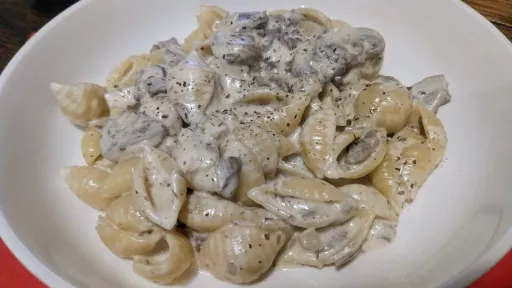

Mushroom and sage pasta
30 mins
Serves 4
Vegetarian

The ultimate umami comfort food.
Ingredients
- 500 g mushrooms
- 1 onion
- 1 clove of garlic
- small bunch of sage
- 600 g creme fraiche
- 20 g salted butter
- 400 g conchiglie pasta
- 150 g Parmesan
- salt
- pepper
- olive oil
Instructions
- Finely dice the
onion1
, slice the mushrooms500 g
and crush the garlic1 clove
.
- Pour some olive oil in the pan, add the
onion1
and a pinch of salt, then cook for around 10 minutes until they start to go transparent. Then add the garlic1 clove
and sagesmall bunch
and cook for a further 2 minutes.
- Add the
mushrooms500 g
to the pan and give everything a good mix so that the mushrooms500 g
are coated. Whack in the butter20 g
and allow it to melt into the mixture then give it a good stir.
- Once the
butter20 g
has melted add the creme fraiche600 g
, give it a mix and then let it simmer for about 10 minutes until the sauce starts to pick up some colour.
- While the sauce is simmering, boil your
pasta400 g
as instructed on the package.
- To finish off the sauce add the
Parmesan150 g
, but save some for later, and then season well with generous amounts of pepper and salt to taste.
- Add the
pasta400 g
to the sauce and give it a good stir. Plate it up with another sprinkle of Parmesan150 g
and garnish with a little sprig of sagesmall bunch
.
www.mobkitchen.com
Short Link
Long Link